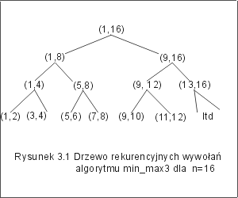

| « poprzedni punkt | nastêpny punkt » |
Trzeci algorytm rozwi±zywania problemu min-max, to algorytm rekurencyjny. Z zasad± "dziel i zwyciê¿aj", któr± tu wykorzystano spotkali¶my w wcze¶niej w algorytmie binarnych poszukiwañ. Warto j± zapamiêtaæ, gdy¿ bêdzie jeszcze wielokrotnie wykorzystywana. Zasada ta g³osi, ¿e aby rozwi±zaæ zadanie rozmiaru n nale¿y najpierw podzieliæ je na podzadania o mniejszych rozmiarach ( np. na dwa podzadania rozmiaru n/2), rozwi±zaæ je i z uzyskanych rozwi±zañ podzadañ wywnioskowaæ rozwi±zanie koñcowe.
W konkretnym przypadku problemu min-max, zastosowanie zasady "dziel i zwyciê¿aj" bêdzie polega³o na podzieleniu danych na dwie, mo¿liwie równe czê¶ci, znalezienie elementów najwiêkszego i najmniejszego w ka¿dej z nich, a nastêpnie ustalenie elementu najmniejszego ca³ego ci±gu, przez porównanie wybranych elementów najmniejszych i ustalenie elementu najwiêkszego przez porównanie elementów najwiêkszych ka¿dej z dwóch czê¶ci:
Algorytm zostanie zapisany jako funkcja min_max3, która zwraca obiekt typu para o dwóch atrybutach min i max. Funkcja ta ma trzy parametry, którymi s±: dany ci±g oraz dwa indeksy wskazuj±ce pocz±tek i koniec rozwa¿anego fragmentu tego ci±gu. W pierwszym wykonaniu funkcji te parametry powinny mieæ odpowiednio warto¶ci 1 i n. Dla uproszczenia rozwa¿añ, przyjmijmy, ¿e n (tzn. liczba elementów w ci±gu) jest potêg± 2.
wp = {($k)(n = 2k)}, wk ={result.min = min(e), result.max= max(e)},
gdzie min(e) oznacza element najmniejszy, a max(e) - element najwiêkszy w ci±gu e.
| para | min_max3 (e: ci±g, i, j : int); | ||
| if (i+1=j) then | |||
| if e[i] £ e[j] then | |||
| result.min := e[i]; result.max := e[j]; | |||
| else | |||
| result.min := e[j]; result.max := e[i]; | |||
| fi | |||
| else | |||
| x := min_max3 (e, i, (i+j)div 2); | // e[k] £ x.max, dla k= i, i+1, ..., (i+j)div 2 oraz | ||
| // x.min £ e[k] , dla k= i, i+1, ..., (i+j)div 2 (za³o¿enie) | |||
| y := min_max3 (e, (i+j)div 2+1, j); | // e[k] £ y.max, dla k= (i+j)div 2, ..., j-1, j oraz | ||
| // y.min £ e[k], dla k= (i+j)div 2, ..., j-1, j (za³o¿enie) | |||
| if (x.min £ y.min) then | |||
| result.min := x.min | |||
| else | // result.min £ e[k], dla k= i, ..., j | ||
| result.min := y.min fi; | |||
| if (y.max £ x.max) then result.max := x.max | |||
| else | //e[k] £ result.max , dla k= i, ..., j | ||
| result.max := y.max fi; | |||
| fi | |||
| } | // result.min £ e[k], e[k] £ result.max dla k=i, ..., j |
Zanim przejdziemy do analizy poprawno¶ci, prze¶led¼my na przyk³adzie, jak dzia³a ten algorytm. Omawiany algorytm jest rekurencyjny, tzn. w jego tre¶ci bêdziemy siê ponownie do niego odwo³ywaæ. Rozwa¿my ci±g o 16 elementach. Warto¶ci tych elementów nie s± teraz istotne. Zanotujmy tylko parametry kolejnych wywo³añ. Zapiszemy je w postaci grafu (por. Rys. 3.1). Ka¿de wywo³anie, o ile dotyczy ci±gu o wiêcej ni¿ dwóch elementach, spowoduje dwukrotne wywo³anie funkcji min_max3. W rozwa¿anym przyk³adzie pierwsze wywo³anie ma parametry (1,16). Poniewa¿ ci±g ma wiêcej ni¿ dwa elementy, zatem zostan± wykonane instrukcje po "else", tzn. wywo³amy dwukrotnie funkcjê min_max3 z parametrami (1,8) i (9,16). Wywo³anie min_max3 dla ci±gu 8 elementowego znów spowoduje dwa rekurencyjne wywo³ania funkcji z parametrami (1,4) i (5,8) itd. Pierwsze porównanie zostanie wykonane dopiero, gdy rozwa¿any fragment ci±gu ma dwa elementy.

Pytanie 3: W jakiej kolejno¶ci bêd± zakoñczone wywo³ania rekurencyjne funkcji min_max3 dla n=8?
Analiza poprawno¶ci algorytmu min_max3.
Udowodnimy, ¿e je¿eli przed wywo³aniem funkcji min_max3(e,i,j) spe³niony jest warunek a(i,j) = {j-i+1 = 2k dla k>0}, to po wykonaniu algorytmu spe³niony jest warunek b(i,j) = {result.min = min(e[i],...,e[j]), result.max = max(e[i],...,e[j]}.
Dowód poprawno¶ci algorytmu min_max3 zaczniemy od przypadku, gdy j-i=1 tzn. ci±g sk³ada siê tylko z dwóch elementów. W takim przypadku zostanie wykonana instrukcja warunkowa:
| if e[i] £ e[j] then |
| result.min := e[i]; result.max := e[j]; |
| else |
| result.min := e[j]; result.max := e[i]; |
| fi; |
Po jej wykonaniu result.min jest elementem najmniejszym we fragmencie ci±gu od e[i] do e[j] , a result.max jest elementem najwiêkszym, co oznacza, ¿e algorytm dzia³a poprawnie dla ci±gów dwuelementowych.
Za³ó¿my, ¿e algorytm dzia³a poprawnie dla wszystkich ci±gów o d³ugo¶ci 2(k-1), gdzie k>1, i rozwa¿my ci±g dwa razy d³u¿szy j-i+1=2k . Zgodnie z tre¶ci± algorytmu, wykonujemy dwa wywo³ania funkcji min_max3. Poniewa¿ (i+j)div 2 - i+1 = j - (i+j)div 2 = 2(k-1), zatem na mocy za³o¿enia indukcyjnego, po wykonaniu wywo³añ
x := min_max3 (e, i, (i+j)div 2); y := min_max3(e, (i+j)div 2+1, j);
spe³nione s± w³asno¶ci:
x.min £ e[l] £ x.max dla l = i, i+1, ..., (i+j)div2 oraz y.min £ e[l] £ y.max dla l = (i+j)div2 +1, ..., j.
Mniejsza z warto¶ci x.min i y.min jest, na mocy przechodnio¶ci relacji £, niewiêksza od e[i], e[i+1],..., e[(i+j)div2] oraz e[(i+j)div2+1], e[(i+j)div2+2], ..., e[j], czyli jest najmniejszym elementem ci±gu e[i],...,e[j]. Wiêksza z warto¶ci x.max i y.max jest elementem najwiêkszym ci±gu e[i],...,e[j]. Zatem po wykonaniu instrukcji warunkowej, rozwa¿ane wywo³anie funkcji min_max3 zakoñczy siê i spe³niony bêdzie warunek
b(i,j) = {result.min = min(e[i],...,e[j]), result.max = max(e[i],...,e[j]}.
Wykazali¶my w ten sposób, ¿e algorytm dzia³a poprawnie dla ci±gów o d³ugo¶ci 2k. Na mocy zasady indukcji matematycznej, je¿eli dane spe³niaj± warunek {j-i+1 = 2k dla k>0}, to po wykonaniu min_max3(e,i,j) otrzymane wyniki spe³niaj± warunek b(i,j) dla dowolnej liczby naturalnej k>0. W szczególno¶ci, gdy n jest potêg± dwójki, wykonanie min_max(e,1,n) daje, dla dowolnego ci±gu e, wyniki spe³niaj±ce warunek koñcowy specyfikacji algorytmu.
Twierdzenie 3.1 Dla dowolnych danych spe³niaj±cych warunek wp = {($k)(n = 2k)}, w dowolnej strukturze, która ma okre¶lony liniowy porz±dek elementów, algorytm rekurencyjny min_max3 zatrzymuje siê, a otrzymany wynik spe³nia warunek koñcowy
wk ={result.min = min(e), result.max= max(e)}.
Analiza kosztu algorytmu min_max3.
Niech T(n) oznacza koszt wykonania (mierzony liczb± wykonanych porównañ) algorytmu min_max3 dla danych o rozmiarze n i niech n= 2k. Je¶li ci±g ma tylko dwa elementy, to algorytm wykonuje jedno porównanie w celu ustalenia, który z elementów jest wiêkszy. Je¶li ci±g ma wiêcej ni¿ dwa elementy, to dzielimy go na dwie czê¶ci i dwukrotnie wywo³ujemy funkcjê min_max3. Na koniec wykonujemy dodatkowo 2 porównania by ustaliæ warto¶æ elementu najmniejszego i najwiêkszego. Korzystaj±c z przyjêtego oznaczenia mo¿emy zdefiniowaæ funkcjê T rekurencyjnie:
- T(2k) = 2 ´ T(2k-1) + 2 dla k>1,
- T(2) = 1.
Rozwi±zaniem tego równania rekurencyjnego jest funkcja T(2k) = 3 ´ 2(k-1) -2.
Rzeczywi¶cie dla k=1, T(2) = 3´20 - 2 = 3 - 2 = 1, co jest zgodne z definicj± funkcji T(n). Za³ó¿my, ¿e T(2i)= 3 ´ 2(i-1) - 2 dla pewnego i. Udowodnimy prawdziwo¶æ wzoru dla i+. Korzystaj±c kolejno z definicji rekurencyjnej i z za³o¿enia indukcyjnego otrzymujemy
T(2i+1) = 2´T(2i)
+ 2 = 2´(3 ´ 2(i-1)
-2) + 2 = 3 ´ 2
i - 2,
co nale¿a³o udowodniæ.
Ostatecznie, T(n) = 3n/2 - 2 dla wszystkich liczb naturalnych n, bêd±cych potêg± 2.
Wad± omawianej tu metody jest u¿ycie rekursji, co jest zawsze zwi±zane z konieczno¶ci± zapamiêtywania parametrów kolejnych wywo³añ. Zwykle tworzy siê do tego celu stos. To oczywi¶cie zajmuje czas i wymaga dodatkowego miejsca. W nastêpnym punkcie omówimy wersjê iteracyjn± tego algorytmu.
Pytanie 4: Ile razy zostanie wywo³ana funkcja min_max3, je¶li w pierwszym wywo³aniu parametrem aktualnym funkcji jest ci±g 128 elementowy oraz i = 1, j = 128?
| « poprzedni punkt | nastêpny punkt » |